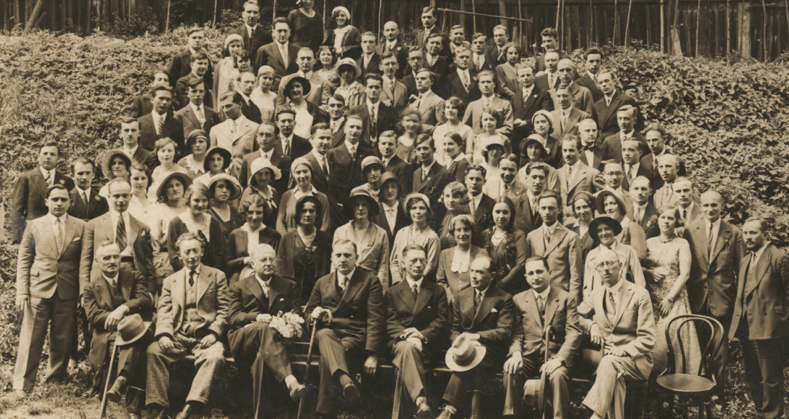

MiNI korzenie
Autorzy: Piotr Storożenko, Bogdan Jastrzębski, Rafał Kobiela
Celem było opracowanie strony internetowej prezentującej związek pracowników z wydziału MiNI z Warszawską i Lwowską szkołą matematyczną.
Dane zostały pozyskane ze strony https://genealogy.math.ndsu.nodak.edu/
Strona składa się z 3 zakładek:
- Mapa powiązań pokazuje całościową zależność (promotor - doktorant) pomiędzy Polskimi matematykami z wielu różnych szkół z wyróżnieniem Uniwersytetu Lwowskiego, Politechniki Warszawskiej oraz Uniwersytetu Warszawskiego.
- Rozwijane drzewo pokazuje bliżej jak wyglądają relacje pomiędzy słynnimi matematykami a ich uczniami.
- Graf koneksji pokazuje jaka ilość matematyków zmieniała uczelnię i jak wyglądały ilościowo te zmiany.